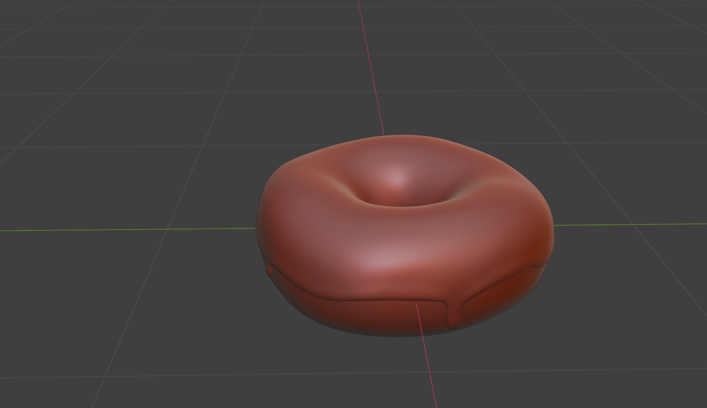
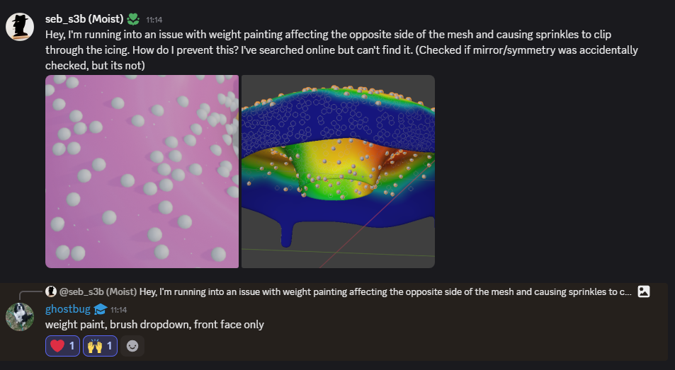
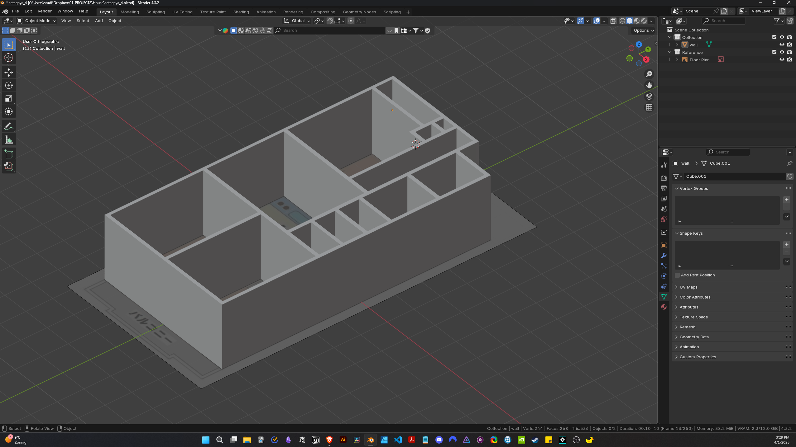
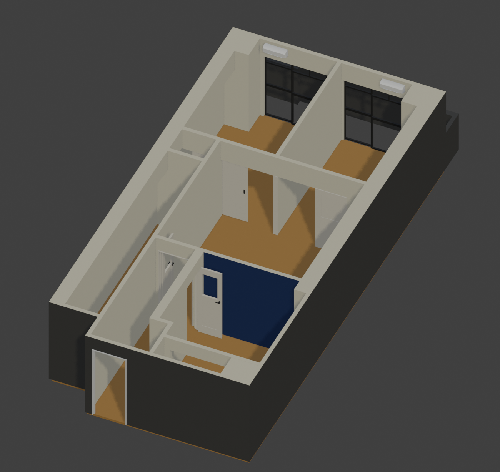
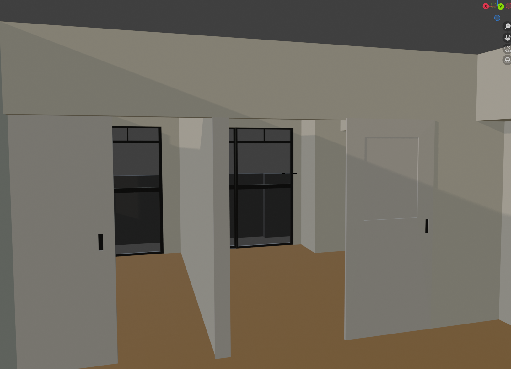
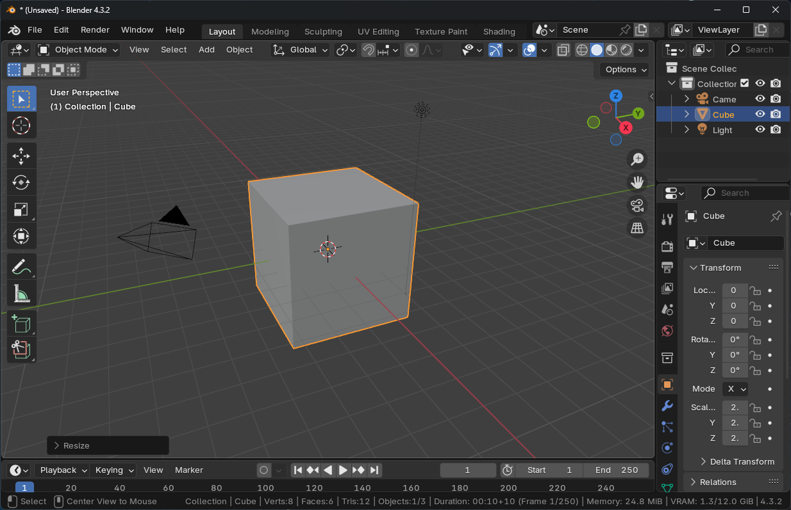

Deciding on a Niche
The rest of the text file is a Markdown blog post. The process will continue as soon as you exit your editor.
Gotta Do The Donut
Earlier this week I completed what is probably the most followed tutorial online, the famous Donut Tutorial for Blender by Andrew (Blenderguru)

test

Asking for help

Tags: blender
The First 10 Hours in Blender
For my first project, I’m working on something that is actually very helpful at the moment. My wife, who lives in Japan, and I are looking for a rental house in the Tokyo area. The average apartment in Tokyo is a lot smaller than what I am used to where I live. For one house that we are deciding on, I’m using the blueprint to make a model to scale, fitting in all the things we want and getting a better picture.
The first 10 hours in Blender have mostly been getting to know some of the basic navigation, modeling some walls and placing some downloaded assets. I barely have an idea of what I am doing, but at least it’s helping us get an idea of the spaces we are looking at.



Tags: blender
I Will Learn Blender 💪🏻
Now and again I get interested in learning to use 3D software. One of the main reasons is because lately I just haven’t been enjoying illustration as much, and I feel stuck with my current style. Drawing has never really been my thing naturally - most of my illustrations are actually just me piecing things together in Illustrator until they work. My process has always been more about methodically constructing images than drawing freehand. I spend hours tweaking and adjusting elements until they look right, building up an image out of separate elements. And honestly, I enjoy that ‘building’ process way more than traditional drawing. Another limitation of my current illustration style is using black outlines and flat colored shapes.
What I’m wondering is if the constructive nature of 3D modeling might align better with how I naturally approach visual creation, potentially offering me a new path forward.
Because I’ve tried Blender a few times before and then dropped it, I’ve decided to commit to spending at least a thousand hours learning Blender. This time I want to get past the ‘tutorial’ phase and actually start making some 3D illustrations. However, I will have to start with that basic cube and figuring out how the hell it even moves around in the 3D space.

Tags: blender